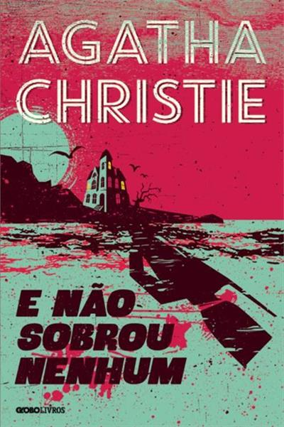
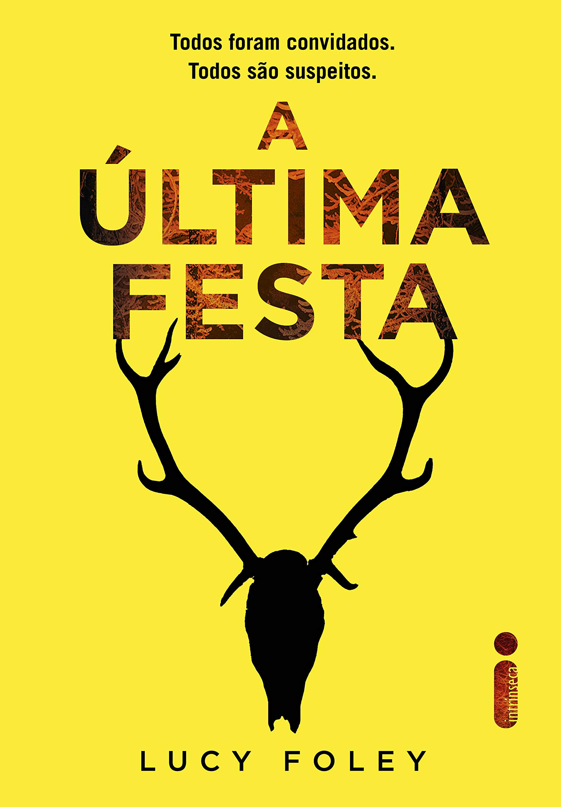
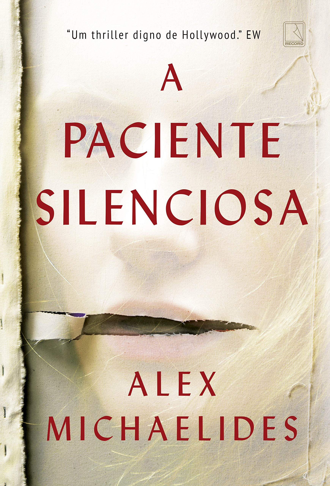

E Não Sobrou Nenhum
Agatha Christie
Dez pessoas são convidadas para uma ilha isolada, mas logo percebem que existe algo muito estranho naquele lugar. Uma sequência de acontecimentos misteriosos transforma a estadia em um verdadeiro quebra-cabeça. É uma história cheia de suspense e reviravoltas.

A Última Festa
Lucy Foley
Um grupo de amigos se reúne para passar o Ano Novo em uma casa isolada nas montanhas da Escócia. O que deveria ser uma comemoração acaba se transformando em um mistério quando um deles desaparece. Aos poucos, segredos e conflitos vêm à tona.

A Paciente Silenciosa
Alex Michaelides
Alicia é uma pintora que, após um acontecimento misterioso envolvendo seu marido, deixa de falar completamente. Um psicoterapeuta decide investigar seu caso e descobrir o que realmente aconteceu. A história mistura suspense psicológico, segredos e surpresas.